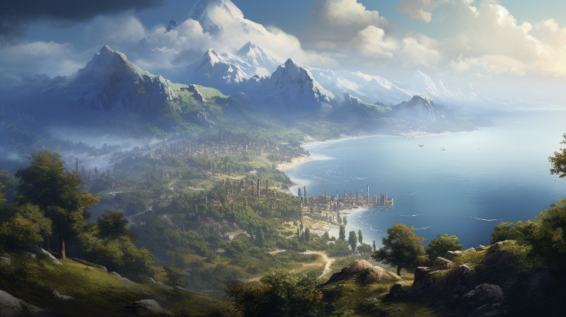

Discover the enigmatic locales of Naurrnen, a world woven with a rich tapestry of history, culture, and natural beauty. Here, every place is a living testament to the complexities of civilizations past and present, from bustling urban centers to serene scholarly sanctuaries. These are lands where reality bends, where the mystical and the mundane coalesce into something utterly captivating. This is a realm that beckons explorers, historians, and adventurers alike, inviting them to unravel its secrets, each place a puzzle, each city a treasure trove of untold stories.
As you wander through Naurrnen, expect to find sites that defy easy categorization, landscapes that exist at the crossroads of science and sorcery, and communities that harbor the echoes of epochs long past. Whether you’re weaving intricate narratives, designing complex role-playing scenarios, or merely indulging in the sheer joy of world-building, the places in Naurrnen offer a boundless canvas for your creativity.
Each locale in Naurrnen serves as a launchpad for countless adventures and quests, a backdrop against which your characters can evolve, struggle, and ultimately transform. No two places are alike, yet all are linked through an intricate web of lore and legacy that leaves much to be discovered. Step into the varied places of Naurrnen and let your imagination soar. You are not just a visitor; you’re a chronicler of its ever-unfolding story. Welcome to a world where every location is a character, and every character is a new world unto themselves.